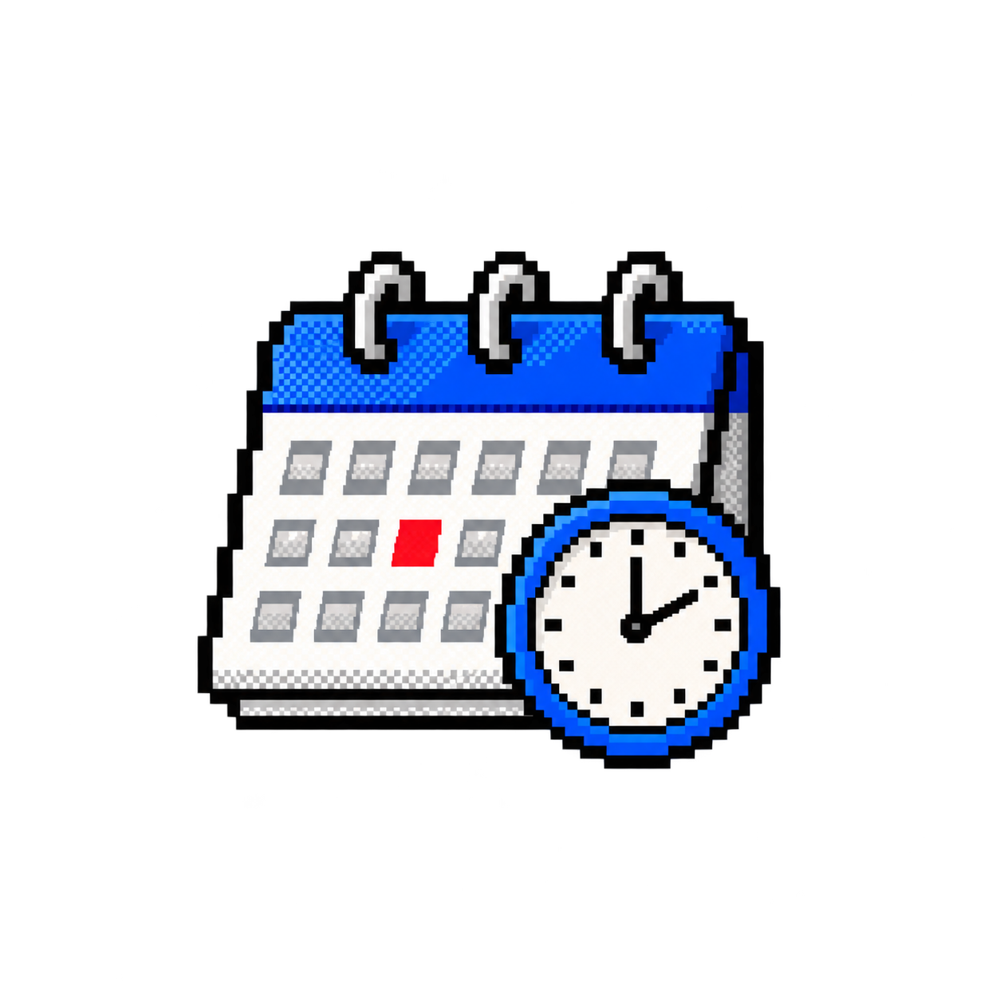

Workspace
Milestones
MilestonesPlan project goals and schedules.
PDF Library
Document libraryKeep documents to read and revisit.
Reference
ReferenceCollect images, references, and ideas.
WireNest
PCB harness studioArrange components and design connections.
파일 보관함
Keep files until you delete them.
File Transfer
File transferMove files between workspaces.
Hardware Sheet
Team purchase sheetOrganize hardware requests and purchase quantities.
Signal Tester
Sensors & signalsLive sensor readings · Charts · Communication logs
Arduino Sketchbook
Reusable sketches & sensor codeBrowse Arduino code, wiring guides and project settings.
A place for things
in progress.
Hardware Sheet
이름을 추가하고 필요한 수량을 입력하세요. 팀원들과 같은 신청표를 사용합니다.
화면이 표시되지 않거나 다운로드가 안 되면 새 탭에서 열어주세요.
Arduino Sketchbook
Loading sketches…
Signal Tester
Connect devices. Explore your signals.
Get started
- Start on this PCSave the EXE and CMD below in the same folder, then run
Open-Signal-Tester.cmd. No Python or source code needed. - Open in browserClick Open web tester or the home card. The tester opens in a new tab.
- Connect & testAdd a Serial or UDP connection, then choose Open connection to see your signals.
Close other Serial Monitors using the same COM port before connecting.
Your existing settings, sensors and signals.
Open web tester ↗Download .exeDownload .cmdWindows 10/11 · 64-bit · No Python or source code required
Save both files in the same folder and run the CMD to start the tester and open your browser.
If the browser does not open, click Open web tester after starting the CMD. Run CMD again after restarting your PC.
Closing the browser tab does not stop communication.
Settings backups
Saved per PCConnect your account to view saved settings.
Settings only — readings and send / receive logs are not backed up.
Connect inside dashboard Advanced
For an embedded view, run SignalTester.exe --dashboard and enter the connection code shown in the console. Allow local network access if your browser asks.
파일 보관함
직접 삭제할 때까지 안전하게 보관하세요.
파일당 최대 5GB · 여러 파일 선택 가능 · 자동 만료 없음
보관함 사용량이 10GB 이상입니다. 저장 비용을 줄이려면 불필요한 파일을 정리해주세요.
파일은 비공개 R2 저장소에 보관되며 Git 용량에 포함되지 않습니다. 보관량에 따라 R2 저장 비용이 발생할 수 있습니다.
파일 전달
Send and receive files temporarily.
Up to 5GB per file · Multiple files supported
Temporary transfer / Files expire automatically
WireNest
Back up and manage your WireNest project files.
PDF 자료실
Keep documents together. Upload, tag and revisit them from any device.
GitHub 연결을 확인하고 있어요.
PDF 한 개당 최대 10MB · 비공개 저장소에 보관됩니다.
자료실은 업로드·수정 시 바로 저장되며, 마일스톤의 백업·복원과 별도로 관리됩니다.
Reference
이미지, 영상, 메모를 자유롭게 펼쳐놓고 연결되는 생각을 모으세요.
Guides: align cards & match spacing · Grid: snap to grid · Alt-drag: move freely
메모는 메모지 안에서 바로 입력 · 카드 위 이동 핸들을 끌어 배치 · 모서리로 크기 조절 · 빈 공간 드래그로 보드 이동 · Ctrl+휠로 확대/축소 · Ctrl+Z로 실행 취소
영상: YouTube / Vimeo / MP4·WebM URL · 이미지: 파일당 최대 20MB
보드를 준비하고 있어요…
보드 백업·불러오기
GitHub 연결 후 이미지·영상·메모와 배치가 비공개 저장소에 자동 저장됩니다.
다른 컴퓨터에서도 같은 GitHub 계정으로 연결하면 이어서 볼 수 있어요. 오프라인 변경은 이 기기에 보관됩니다.
프로젝트
Explore your projects and open one to see its schedule.
Projects
체크박스로 로드맵에 표시하거나 삭제할 프로젝트를 선택하세요. 프로젝트 이름을 누르면 캘린더, 연결 맵과 상세 일정을 볼 수 있어요.
한눈에 보는 프로젝트 일정
Select projects above to explore and share their roadmap.
카드 더블클릭: 이름 수정 · 선택 후 Delete: 삭제 · 오른쪽 아래 확대 아이콘: 이미지·메모 보드 열기 · Ctrl+Z: 되돌리기
카드 본문을 세로 열로 끌어 배치하고, 네모 핸들을 빈 곳으로 끌어 연결된 카드를 만드세요.
Milestone timeline
Update history
파일 백업·불러오기 ● 이 기기에 저장됨
GitHub 연결 후 프로젝트·일정·연결 맵 배치가 자동 저장됩니다. 다른 컴퓨터에서도 같은 계정으로 연결해 주세요.
오프라인 변경은 이 기기에 보관되며, 연결되면 다시 저장합니다.